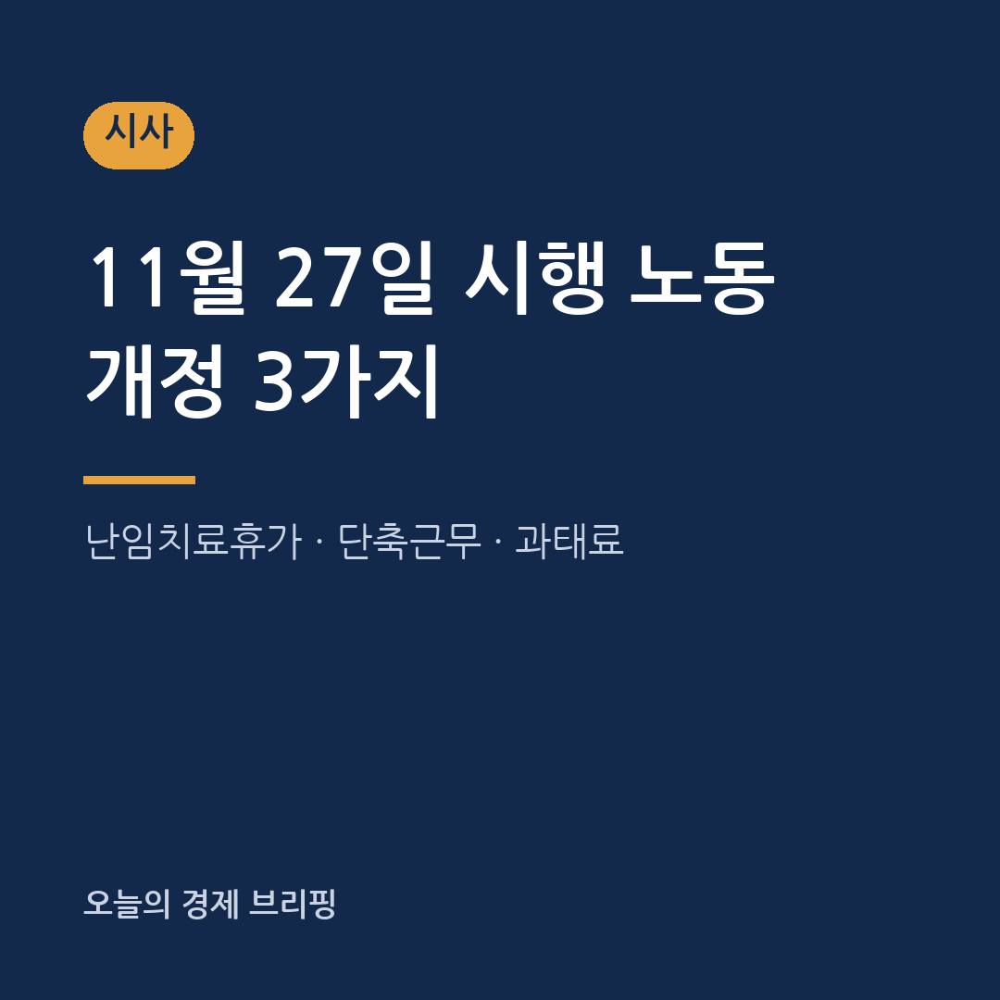
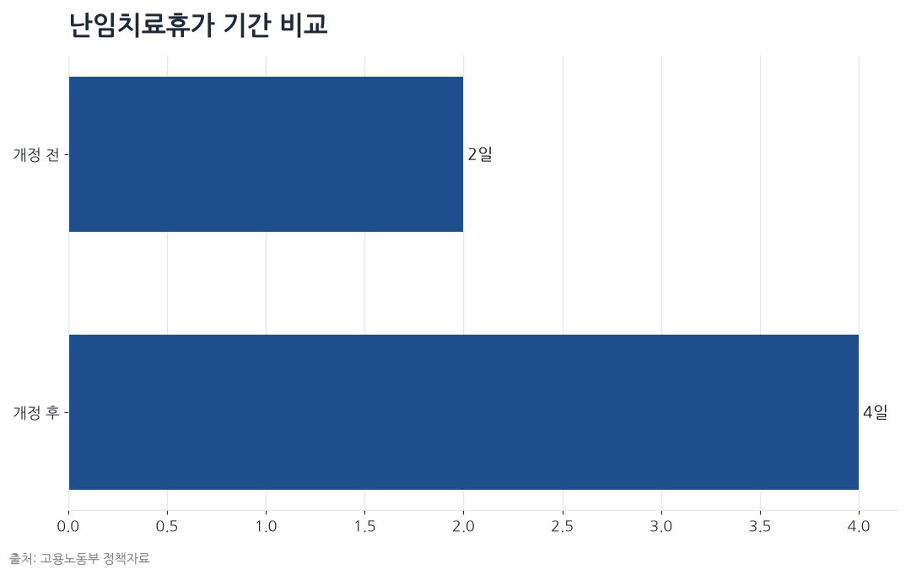

2026-11-27-1139-tistory 발행 키트 · 이 페이지는 검색에 노출되지 않습니다.
제목
카테고리
시사태그
본문 (그림·표 포함)
휴대폰 블로그 앱에서는 그림이 같이 붙지 않을 수 있어요. 그때는 [글자만 복사] 후 아래 이미지를 저장해 [그래프1]·[표1] 자리에 첨부하세요.

2026년 11월 27일부터 시행된 고용노동부 안내 기준 개정사항은 세 가지입니다. 유급 난임치료휴가가 2일에서 4일로 늘고, 육아기 단축근무 신청에 대한 사업주의 통지 기한(14일)이 생겼으며, 직장 내 성희롱 관련 과태료 대상이 넓어졌습니다.
▶ 배경: 일과 돌봄을 함께 하기 위한 제도 보완
난임 치료, 육아, 직장 내 괴롭힘 예방은 근로자의 일상과 직접 맞닿은 영역입니다. 이번 개정은 휴가 일수, 처리 기한, 제재 범위를 구체적 숫자와 대상으로 정한 것이 특징입니다.
▶ 핵심 내용 1: 난임치료휴가 기간 확대
유급 난임치료휴가의 기간이 기존 2일에서 4일로 확대되었습니다. 난임 치료는 시술 전후 일정이 이어지는 경우가 많아, 휴가 일수가 늘어나면 연차를 따로 쓰는 부담이 줄어들 수 있습니다.

▶ 핵심 내용 2: 육아기 단축근무 신청 통지 의무
육아기 근로시간 단축(자녀 양육을 위해 일하는 시간을 줄이는 제도)을 허용하는 경우, 사업주는 14일 이내에 근로자에게 그 사실을 알려야 합니다. 신청 이후 결과를 기다리는 기간이 불확실했던 점을 보완하는 내용입니다.
▶ 핵심 내용 3: 직장 내 성희롱 과태료 대상 확대
종전에는 사업주만 과태료 부과 대상이었으나, 이제 법인의 대표자가 포함됩니다. 또한 사업주 또는 법인 대표자의 친족인 상급자와 근로자까지 대상에 들어갑니다.
개정사항 한눈에 보기
| 구분 | 내용 | 확인할 곳 |
|---|---|---|
| 난임치료휴가 | 유급 기간 2일에서 4일로 확대 | 사업장 인사 부서 |
| 육아기 단축근무 | 허용 시 사업주 14일 이내 통지 | 사업장 인사 부서 |
| 직장 내 성희롱 | 과태료 대상에 법인 대표자·친족 상급자·근로자 추가 | 고용노동부 안내 자료 |
출처: 고용노동부 정책자료
▶ 영향: 누구에게 어떻게 달라지나
난임 치료 중인 근로자는 휴가 일수가 두 배가 됩니다. 육아기 단축근무를 고려하는 근로자는 회사 답변 시점을 예측할 수 있고, 인사 담당자는 신청 접수 후 처리 일정을 14일 기준으로 관리해야 합니다. 소규모 가족 기업에서는 성희롱 예방 교육과 신고 절차를 점검할 필요가 있습니다.
▶ 함께 확인할 소식: 학교 비정규직 총파업
같은 날 전국 학교 비정규직 노동자들의 총파업이 있었고, 전북 지역에서는 392개 학교의 급식 운영에 차질이 생겼습니다. 초등 돌봄교실 운영도 영향을 받은 것으로 전해졌습니다. 학부모는 자녀가 다니는 학교의 급식·돌봄 공지를 개별적으로 확인하는 것이 좋습니다.
▶ 확인할 점
첫째, 본인 회사의 취업규칙과 휴가 규정이 개정 내용을 반영했는지 확인합니다. 둘째, 구체적인 신청 요건과 서류는 고용노동부 안내 자료와 사업장 인사 부서에서 확인합니다. 셋째, 학교 급식·돌봄 운영 여부는 학교 공지가 기준입니다.
▶ 정리
1. 유급 난임치료휴가는 2일에서 4일로 확대되었습니다.
2. 육아기 단축근무 신청에 대해 사업주는 14일 이내 통지해야 합니다.
3. 직장 내 성희롱 과태료 대상에 법인 대표자와 친족 상급자·근로자가 추가되었습니다.
출처 (본문 맨 아래에 붙여넣기 권장)
- 고용노동부 정책자료, 2026.11.27..부터 시행되는 '직장 내 성희롱 제재 대상확대, 난임치료휴가, 육아기 단축등 개정사항' 안내 자료입니다., https://www.moel.go.kr/policy/policydata/view.do?bbs_seq=20261100940 - 연합뉴스, 비정규직 파업으로 전북 392개 학교 급식 차질, https://www.yna.co.kr/view/AKR20261127075200055